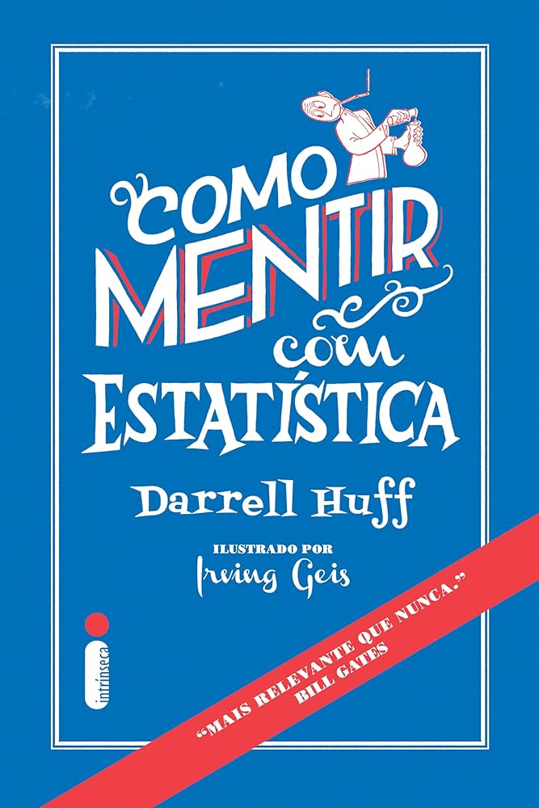

Sobre — Aprendizado
Estante
Livros que li e recomendo sobre finanças, programação, estatística e análise de dados — as leituras que moldaram como penso sobre o trabalho.
Finanças
O
O Investidor Inteligente
A obra mais importante sobre value investing. Graham apresenta a distinção entre especulação e investimento e introduz o conceito de margem de segurança — leitura obrigatória para qualquer pessoa que lida com finanças.
A Psicologia do Dinheiro
Explora os vieses psicológicos que distorcem nossas decisões financeiras cotidianas — por que gastamos de formas irracionais, como avaliamos valor e o que nos impede de tomar melhores decisões com dinheiro. Direto, divertido e revelador.
A
A Psicologia Financeira
Explora como comportamento e emoções influenciam decisões financeiras mais do que qualquer planilha. Escrito de forma acessível, é um dos melhores livros sobre dinheiro dos últimos anos.
F
Flash Boys
Uma investigação jornalística sobre o mercado de alta frequência e como a tecnologia transformou (e distorceu) as bolsas de valores. Leitura fascinante na interseção de finanças e programação.
P
Princípios
O fundador da maior hedge fund do mundo compartilha os princípios que guiam suas decisões de vida e negócio. Denso, mas cheio de frameworks úteis para pensar sobre gestão e economia.
Programação
P
Python para Análise de Dados
Escrito pelo criador do pandas, é o guia de referência para manipulação de dados com Python. Cobre NumPy, pandas e matplotlib com exemplos práticos e aplicados.
A
Automate the Boring Stuff with Python
O melhor livro para quem quer aprender Python automatizando tarefas reais: manipulação de arquivos, planilhas, PDFs, e-mails e muito mais. Mudou como eu enxergo o trabalho repetitivo.
C
Clean Code
Ensina a escrever código legível, manutenível e bem estruturado. Os princípios se aplicam independentemente da linguagem — essencial para quem quer elevar a qualidade do próprio trabalho.
Estatística & Probabilidade

Como Mentir com Estatística
Clássico e brevíssimo. Mostra como gráficos, médias e percentuais podem ser manipulados para enganar. Leitura obrigatória antes de confiar em qualquer dado apresentado na mídia.
O
O Andar do Bêbado
Explora como a aleatoriedade molda nossas vidas de formas que raramente percebemos. Combina probabilidade, psicologia e história de forma envolvente. Ótimo para calibrar a humildade diante dos dados.
E
Estatística Prática para Cientistas de Dados
Abordagem moderna e aplicada da estatística voltada para quem trabalha com dados no dia a dia. Cobre os conceitos que realmente importam com foco em intuição e prática.
Análise de Dados & Visualização
S
Storytelling com Dados
O melhor livro sobre visualização de dados orientada à comunicação. Ensina a eliminar ruído visual, escolher o gráfico certo e construir narrativas com dados. Transformou como apresento análises.
T
The Data Warehouse Toolkit
A referência definitiva em modelagem dimensional. Fundamental para quem constrói pipelines de dados, dashboards e relatórios em Power BI ou qualquer ferramenta de BI.